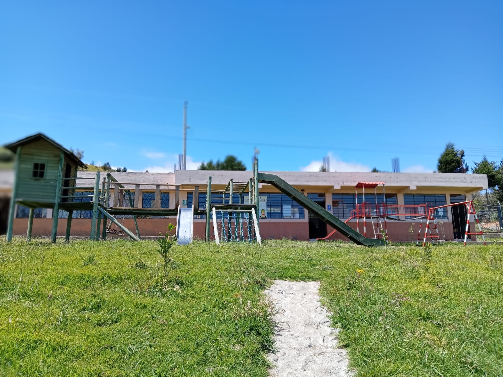

La Escuela de Educación Básica Fiscal Mixta “Zamora Chinchipe”, es una Institución pluri- docente, conformada por 35 estudiantes, desde el nivel inicial, básica elemental y básica media dirigida hacia la educación de calidad y calidez formando estudiantes con gran capacidad de comprensión lectora, autonomía para su desempeño, creatividad para resolver problemas y libertad de expresión, impartiendo una educación personalizada a niños y niñas con una participación activa donde se promueve el Buen Vivir.
